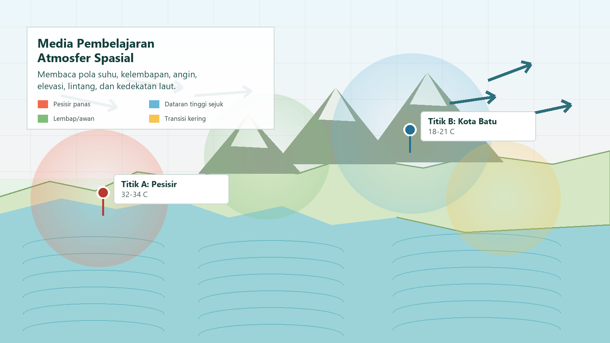
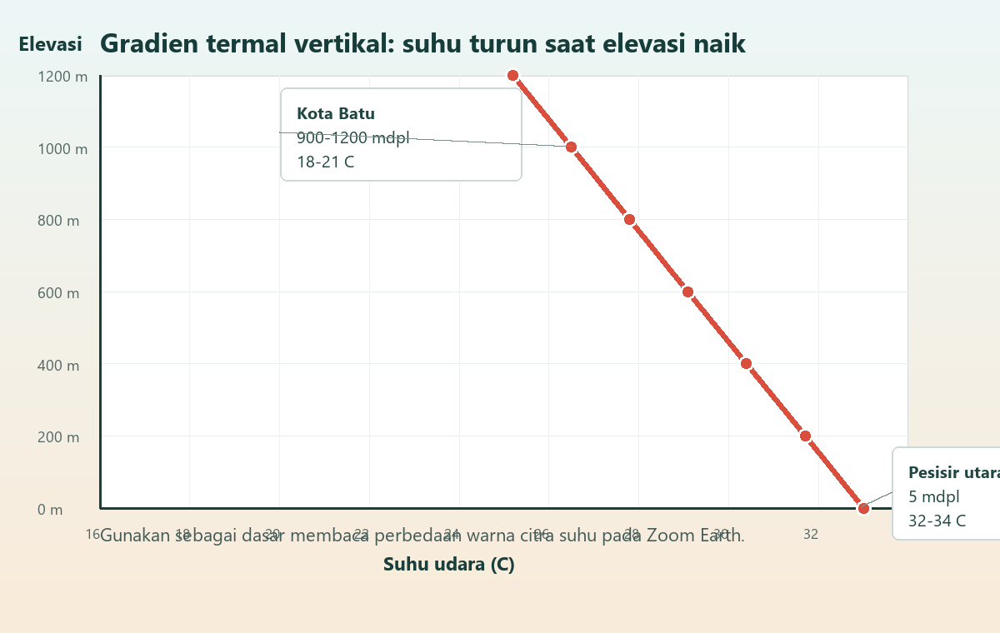

Hubungkan suhu dan kelembapan dengan elevasi, lintang, dan jarak dari laut.
Geografi Kelas X | Fase E | 2 JP x 45 menit
Laboratorium Atmosfer Berbasis Lokasi
Media ini mengubah modul atmosfer menjadi ruang belajar interaktif: siswa membaca peta suhu, membandingkan pesisir dan dataran tinggi, menafsirkan data cuaca, lalu menyusun bukti spasial dalam LKPD.
Baca peta tematik, grafik sederhana, dan citra cuaca secara kritis.
Sajikan temuan dalam bentuk peta, screenshot beranotasi, atau infografis.

Alur Pertemuan
Dari Pemantik Sampai Portofolio
Pendahuluan
Diskusi pemantik: mengapa pesisir Surabaya terasa lebih panas daripada Kota Batu?
Inti
Orientation, organization, investigation, presentation, analysis, dan evaluation.
Penutup
Simpulan berbasis bukti spasial, refleksi lingkungan, dan pengumpulan karya visual.
Materi Inti
Atmosfer Sebagai Sistem Spasial
Fokus pembelajaran adalah memahami dinamika atmosfer melalui bukti lokasi: warna citra suhu, pola angin, kelembapan, elevasi, lintang, dan jarak dari laut.
Konsep atmosfer yang dipelajari
Atmosfer dipahami melalui komposisi, struktur lapisan, unsur cuaca dan iklim, serta dampak aktivitas manusia seperti pemanasan global dan perubahan iklim.
- Konseptual: definisi atmosfer, lapisan atmosfer, cuaca, iklim, dan faktor pengendali iklim.
- Prosedural: membaca data cuaca sederhana, citra satelit, dan peta tematik.
- Metakognitif: menyadari peran atmosfer bagi kehidupan dan tanggung jawab lingkungan.

Elevasi
Semakin tinggi suatu tempat, suhu cenderung menurun karena kerapatan udara dan tekanan berubah.
Lintang
Perbedaan lintang memengaruhi sudut datang sinar matahari dan intensitas pemanasan.
Kedekatan Laut
Pesisir memiliki pengaruh angin laut dan kelembapan yang berbeda dari wilayah pedalaman.
Tutupan Lahan
Permukiman padat, vegetasi, dan badan air dapat mengubah pola suhu lokal.
Bermakna
Konsep dihubungkan dengan pengalaman harian seperti panas pesisir, hujan lebat, dan udara pegunungan.
Menyenangkan
Siswa mengeksplorasi visualisasi cuaca, diskusi kelompok, dan peta tematik yang hidup.
Reflektif
Siswa melihat atmosfer sebagai sistem: perubahan suhu dapat memengaruhi tekanan, angin, dan hujan.
Simulasi
Uji Faktor Geografis
Atur elevasi, lintang, dan jarak dari laut untuk melihat perubahan estimasi suhu, kelembapan, warna citra, dan argumentasi spasial.
LKPD Digital
Catatan Investigasi Kelompok
Gunakan tabel ini untuk mencatat lokasi, hasil pembacaan layer cuaca, dan faktor geografis penyebab perbedaan atmosfer.
| Lokasi | Elevasi | Suhu | Kelembapan | Jarak Laut | Faktor Dominan | Kesimpulan Spasial |
|---|
Asesmen Sumatif
Kuis Interpretasi Atmosfer
Pertanyaan menilai kemampuan membaca fenomena atmosfer, menalar data spasial, dan menyusun kesimpulan berbasis lokasi.
Penilaian Formatif
Rubrik Visual Berbasis Lokasi
Rubrik mengikuti modul: interpretasi peta dan citra satelit, penyajian visual, serta argumentasi akademik saat presentasi.
Total Skor
9 / 12
Kinerja baik. Perkuat ketepatan legenda dan bukti lokasi.
Refleksi Mindful
Cuaca, Lingkungan, dan Kebiasaan Diri
Pertanyaan reflektif diarahkan pada kesadaran metakognitif dan kepedulian lingkungan.